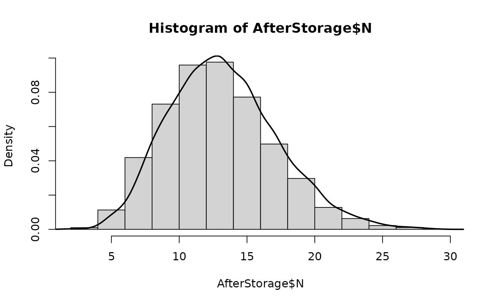

The function caHoldingTime() simulates the survival of L. monocytogenes on cantaloupe rind
during post-harvest holding time or during any short storage before cantaloupes are washed in the
packinghouse. The algorithm calculates decline in L. monocytogenes, and not growth on surfaces,
because it is assumed that if any event that injured the rind occurred, it would have been very recent (at harvest),
and the holding time would be too short that any growth on the bruised rind would be unlikely or negligible.
The user can define a probability pCooled that the lot of just-harvested cantaloupes is kept at cold temperatures (4-10 \(^\circ\) C).
If \(p\_Cooled=0\), the algorithm will evaluate the survival of L. monocytogenes on cantaloupes held at ambient temperature (25 \(^\circ\) C).
Usage
caHoldingTime(
data = list(),
nLots = NULL,
sizeLot = NULL,
pCooled,
time,
shape = 0.6271,
meanD410 = 1.1309,
sdD410 = 1.770711e-06,
meanD25 = 2.890015,
sdD25 = 0.2288748,
timePrevious = NULL
)Arguments
- data
a list of:
- N
(
CFU) A matrix of sizenLotslots bysizeLotunits representing the numbers of L. monocytogenes on the cantaloupe rind, from contaminated harvested lots;- P
Prevalence of contaminated harvested lots (scalar).
- nLots
Number of lots sampled or size of the Monte Carlo simulation (scalar).
- sizeLot
Number of units or portions produced in a lot (scalar).
- pCooled
Probability that a lot of harvested cantaloupes is cooled (4-10 \(^\circ C\)).
- time
(
h) Holding time or storage time of a lot of harvested cantaloupes.- shape
Shape parameter of the Weibull decay model (\(default = 0.6271\), obtained from modelling data from Nyarko et al. (2016) ).
- meanD410
(day) Mean of the time to first log10 reduction at 4-10 \(^\circ C\) (default = 1.1309 day, obtained from modelling data from Nyarko et al. (2016) ).
- sdD410
(day) Standard deviation of the time to first log10 reduction at 4-10 \(^\circ C\) (\(default = 1.770711e-06\) day, obtained from modelling data from Nyarko et al. (2016) ).
- meanD25
(day) Mean of the time to first log10 reduction at 25 \(^\circ\) C) (\(default = 2.890015\) day, obtained from modelling data from Nyarko et al. (2016) ).
- sdD25
(day) Standard deviation of the time to first log10 reduction at 25 \(^\circ\) C (\(default = 0.2288748\) day, obtained from modelling data from Nyarko et al. (2016) ).
- timePrevious
(
h) Storage time of cantaloupes in previous holding stage(s).
Value
A list of two elements of the data objects:
- N
(
CFU) A matrix of sizenLotslots bysizeLotunits representing the numbers of L. monocytogenes on cantaloupe after holdingtime;- P
Prevalence of contaminated harvested lots after holding
time;- timePrevious
(
h) Total time the cantaloupes have been stored since harvesting.
Note
Data on the survival of L. monocytogenes on the intact rind of two varieties of cantaloupe stored at 4, 10 and 25 \(^\circ\) C were
extracted from Nyarko et al. (2016)
. A non-linear mixed model based on the two-parameter Weibull decay equation with random effects
on melon variety showed that the time to achieve the first log10 reduction (D) at 25 \(^\circ\) C was significantly different from the other two temperatures,
while there was not significant difference in D between the storage temperatures of 4 and 10 \(^\circ C\). Therefore, the non-linear mixed model was refitted
for two temperature classes (cool 4/10 \(^\circ C\)) and ambient (25 \(^\circ C\)). The shape parameter is fixed for the two temperature classes.
Placing random effects in D with cantaloupe variety as the clustering variable, the estimates of meanD410, sdD410, meanD25 and sdD25 were obtained.
The present function represents the cultivar-specific variability about D at cool or ambient temperature as a normal distribution;
and a D value is sampled for every lot, assuming a different cantaloupe cultivar.
It is assumed that after the holding time, it is not possible that a contaminated lot become free of L. monocytogenes. Therefore,
if by chance the rinds of all cantaloupes from a contaminated lot end up having zero counts, one cell will be assigned to one cantaloupe of the lot.
References
Wolodzko T (2020). extraDistr: Additional Univariate and Multivariate Distributions. R package version 1.9.1, https://CRAN.R-project.org/package=extraDistr.
Team RC (2022). R: A Language and Environment for Statistical Computing. R Foundation for Statistical Computing, Vienna, Austria. https://www.R-project.org/.
Nyarko E, Kniel KE, Reynnells R, East C, Handy ET, Luo Y, Millner PD, Sharma M (2016). “Survival and Growth of Listeria monocytogenes on Fresh-Cut "athena" and "rocky Ford" Cantaloupes during Storage at 4°C and 10°C.” Foodborne Pathogens and Disease, 13(11), 587-591. doi:10.1089/fpd.2016.2160 .
Author
Ursula Gonzales-Barron ubarron@ipb.pt
Examples
dat <- caPrimaryProduction(
nLots = 100,
sizeLot = 100)
pCooled <- 0.75
time <- 4 # hours
AfterStorage <- caHoldingTime(dat,
pCooled = pCooled,
time = time,
shape = 0.6271,
meanD410 = 1.1309,
sdD410 = 1.770711e-06,
meanD25 = 2.890015,
sdD25 = 0.2288748
)
hist(AfterStorage$N, probability = TRUE)
lines(density(AfterStorage$N), col = "black", lwd = 2)
